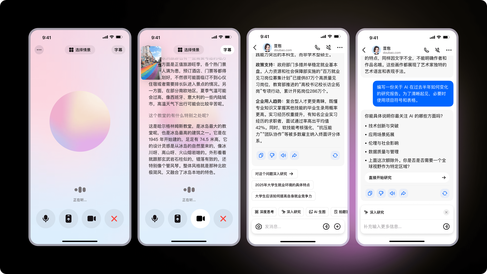
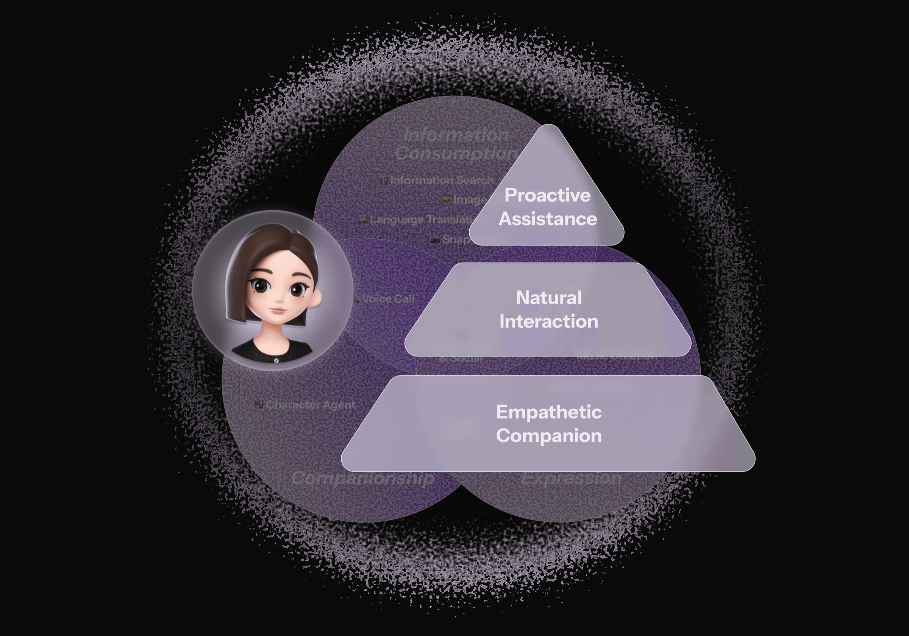
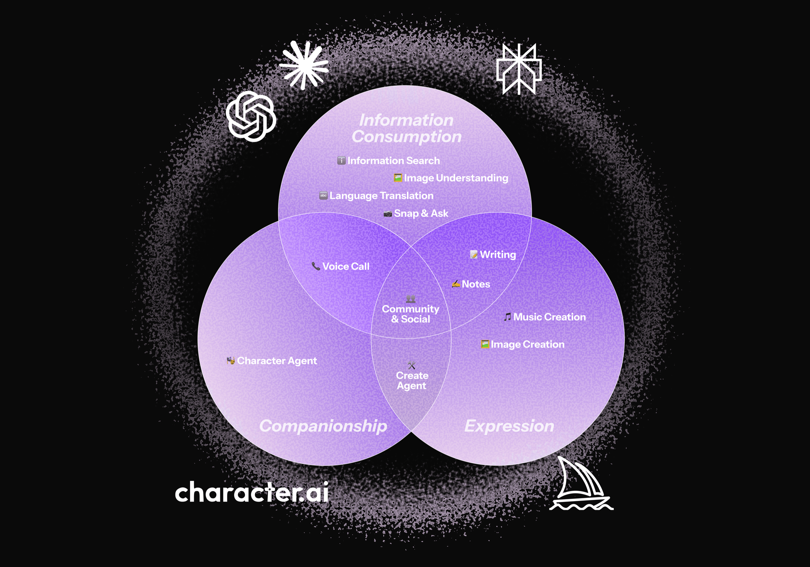
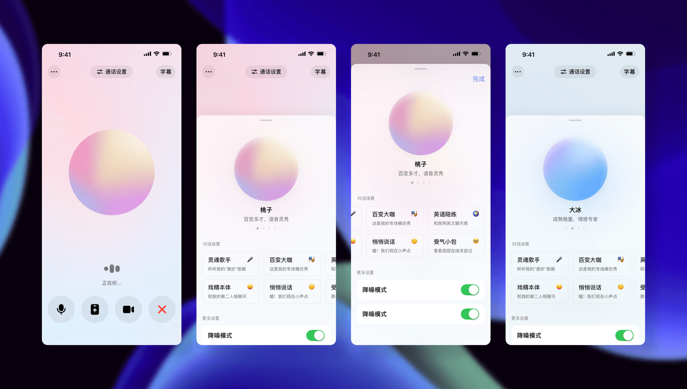

ByteDance/Doubao AI
Launched in April 2023, Doubao has become China’s most-used AI agent, surpassing 100 million DAU. Its global counterpart, Dola, secured #1 download spots in countries like Indonesia and Mexico. As one of core designers for the Doubao and Dola mobile team, I led the design for mobile key features, including video call feature, which are now live and serving this massive user base.
How we built China's No.1 AI Agent？
By August 2025, AI products like ChatGPT, Gemini, Grok, Perplexity and Claude had already gained visibility and user traction. In contrast, how to build an AI-native product and establish user awareness remained unproven in the Chinese and non-Engliah market. This led us to ask a fundamental question:
Why do users come to us?


We believe that on mobile, proactive assistance, natural interactions, and empathetic companion can effectively serve China’s large and diverse user base.
I designed and led 10+ P0-level features.
More than half of which demonstrated statistically significant positive results in AB tests and were successfully rolled out to full production.
Proactive Assistant
A swipe-to-expand interaction helps users better discover additional skills.
Automatically recommends the right skill based on the question to help craft a better answer.
Natural Interaction
A swipe-up gesture opens multi-select, allowing users to add or remove photos on the fly while asking, without breaking the flow.
Empathetic Companion

Call mode supports voice profile selection and scenario-based conversation modes, allowing more contextual and expressive communication.
Designing AI products means dancing with constraints
AI product design is ultimately guided by model capability, which evolves constantly. Effective design requires grounding decisions in real user needs rather than chasing flashy features. This meant continuously evaluating where the model could deliver real impact, using its strengths to solve meaningful problems, and iterating quickly with each release. By embracing the evolving capabilities and adjusting the experience in real time, we ensured that every update translated into tangible value for users.
Zero-to-one design still starts with user habits
Even with state-of-the-art models, AI products don’t scale unless they align with existing user behaviors. By anchoring on real scenarios, borrowing intuitive interaction patterns, and recognizing deeper emotional drivers, we reduced adoption friction and increased engagement. AI novelty alone wasn’t what resonated — familiarity was.